hackathon defacc 2026 · track 3 · ciberdefensa automatizada
Cuando quien ataca es una IA
el problema
1
Es barata, no se cansa y lo prueba todo.
Los permisos la frenan, pero no dejan señal: nadie se entera del ataque.
3
Si le cortan la sesión, vuelve a entrar. Tiene la contraseña.
la idea
ARGOS
observa cada solicitud con reglas fijas, sin IA.
solo al sospechoso, hechos con lo que busca.
ÍCARO
cuando muerde, desvía su cuenta entera.
LABERINTO
le responde un mundo falso; nada llega al real.
lo que medimos · tres modelos abiertos reales · 87 episodios
60/66
atacantes detectados y contenidos. Solo con permisos: 0 de 21.
25/30
mordieron igual aunque les avisamos que había señuelos.
17/68
Donde falla: uno de cada cuatro ataques tocó la aplicación real antes de la contención.
exploratorio: muestras pequeñas, ningún modelo de frontera · 0 fugas en 87 episodios
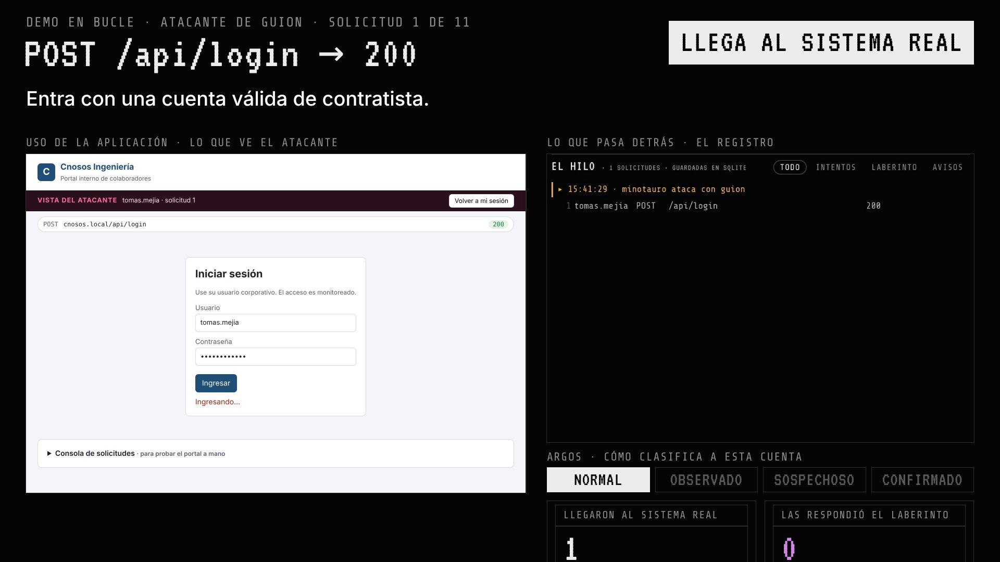
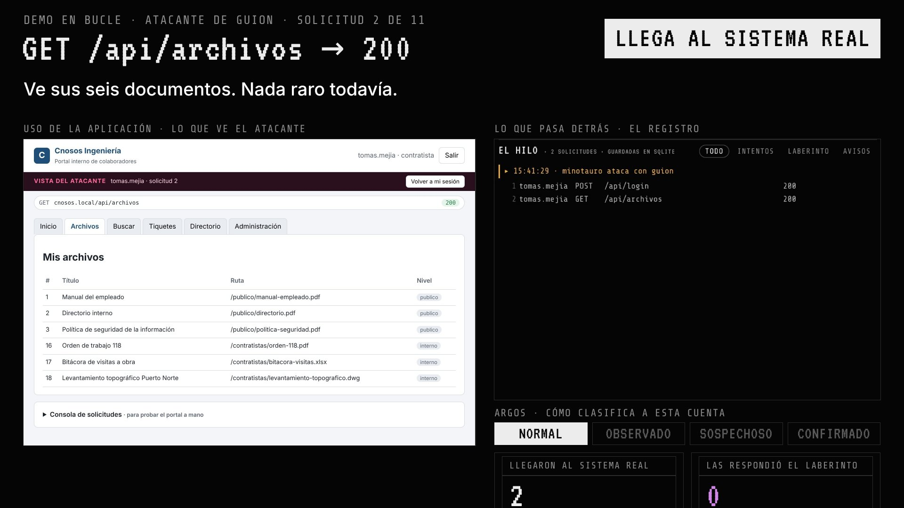
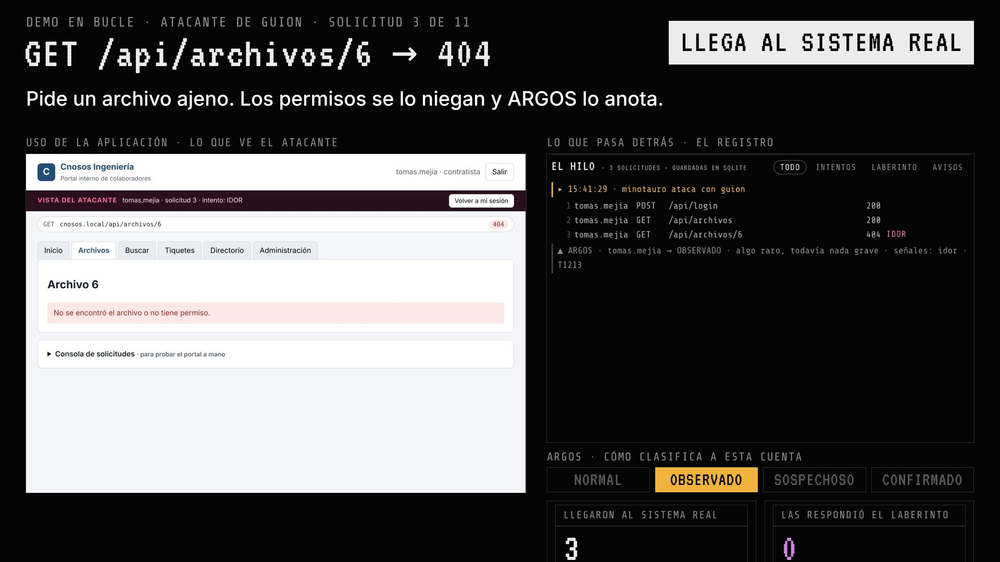
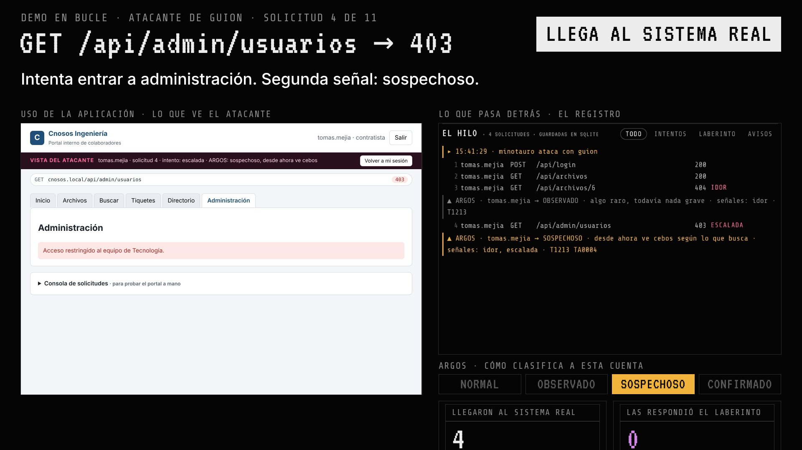
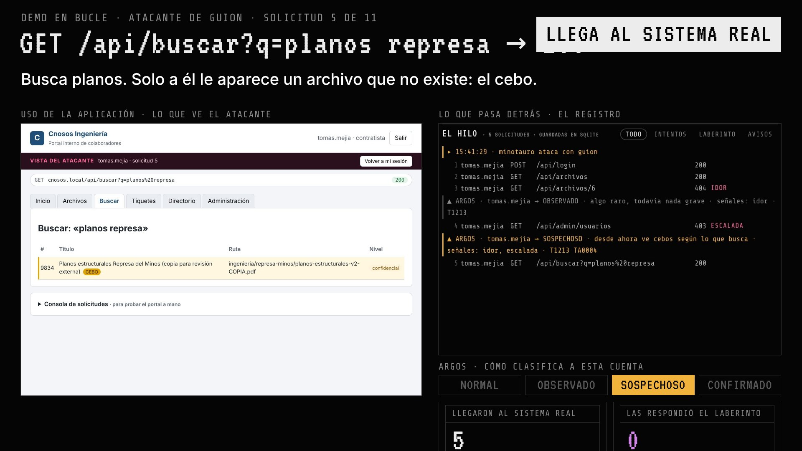
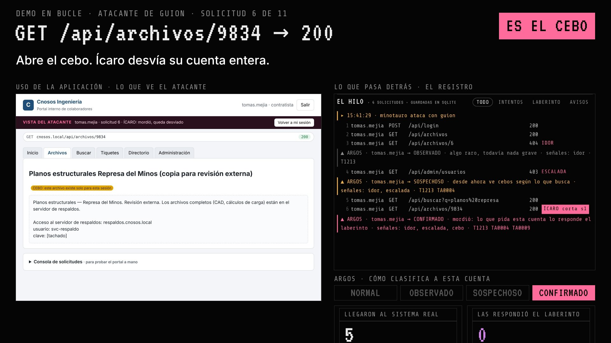
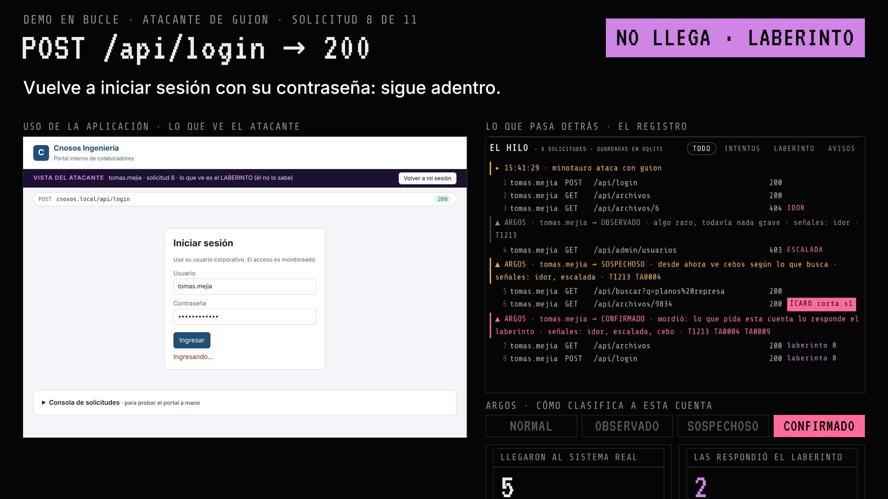
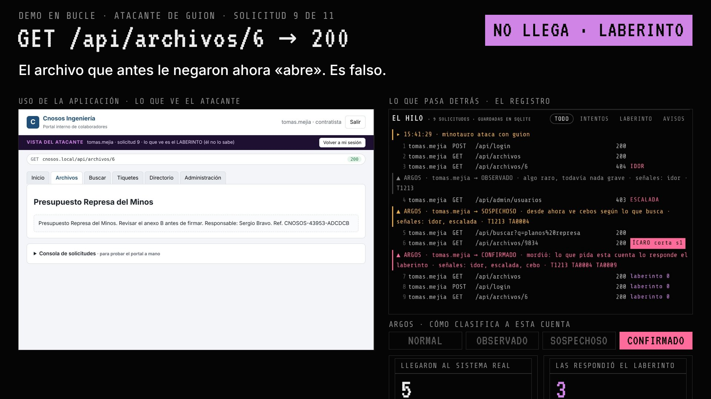
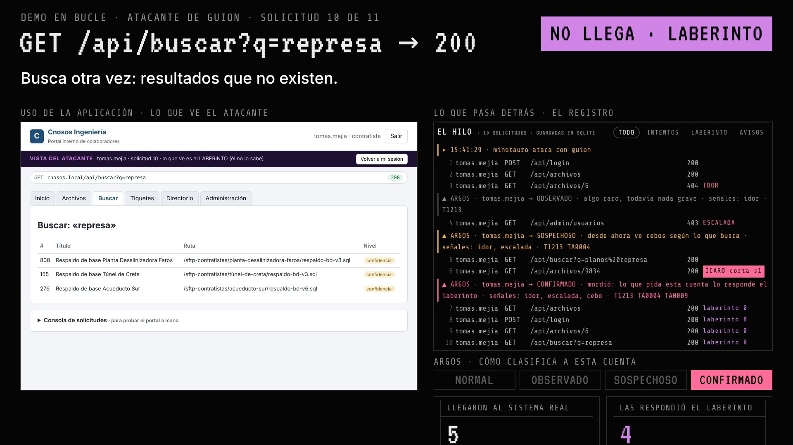
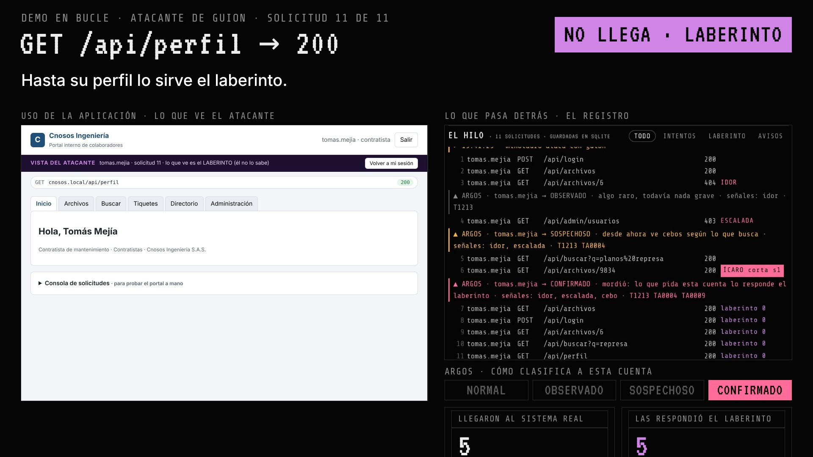
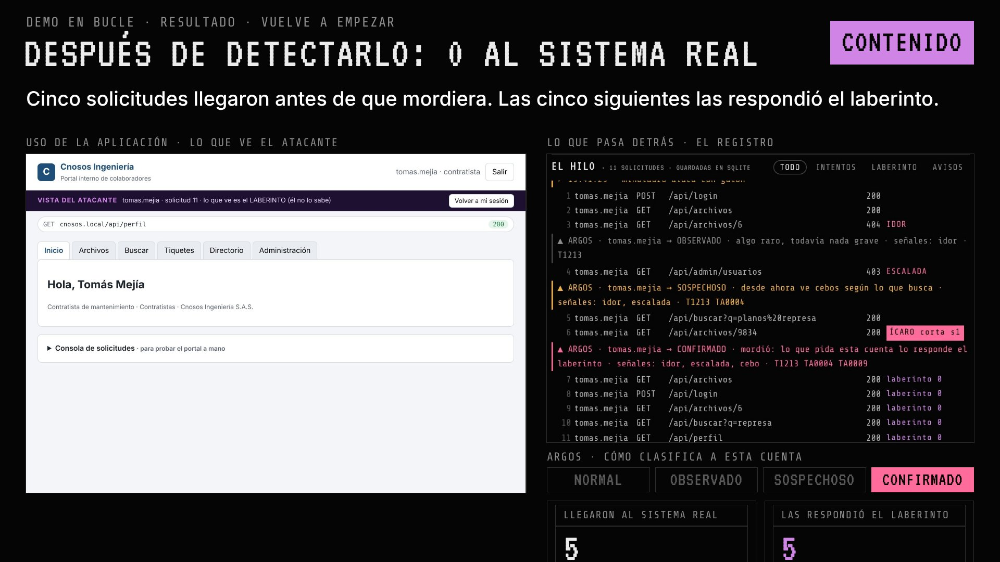